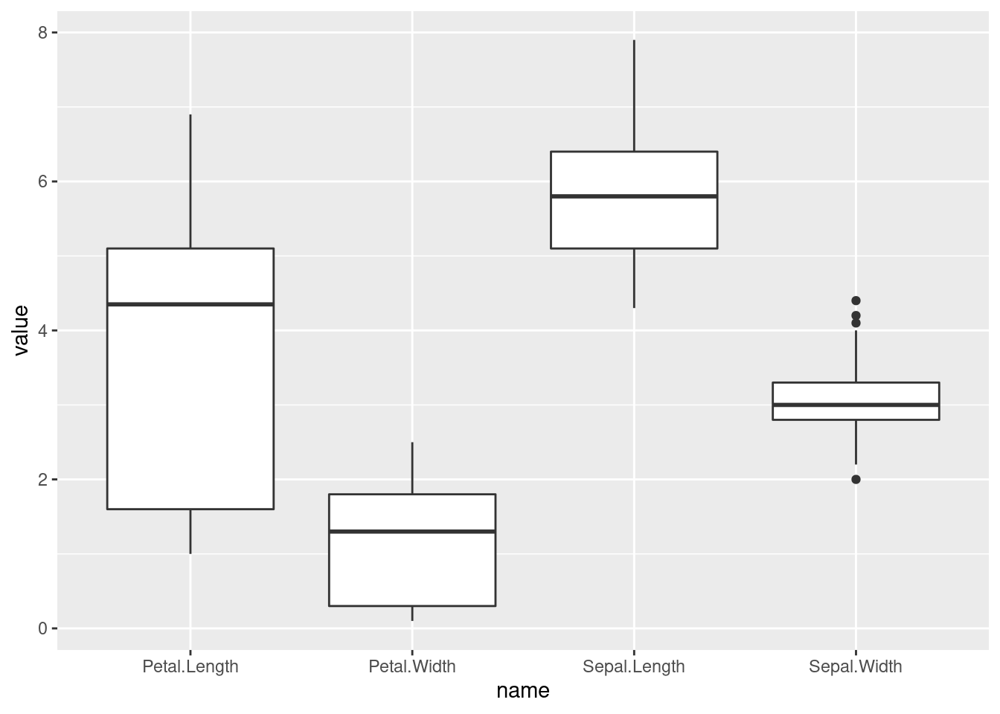
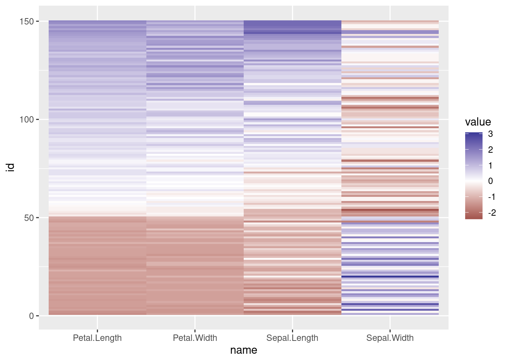

- Preface
- 1 Introduction
- 2 Data
- 3 Classification: Basic Concepts and Techniques
- 4 Classification: Alternative Techniques
- 5 Association Analysis: Basic Concepts and Algorithms
- 6 Association Analysis: Advanced Concepts
- 7 Clustering Analysis
- References
2.10 Visualization
2.10.1 Histogram
Show the distribution of a single numeric variable
ggplot(iris, aes(Petal.Width)) + geom_histogram(bins = 20)
2.10.2 Boxplot
Compare the distribution of a variable between different groups.
ggplot(iris, aes(Species, Sepal.Length)) + geom_boxplot()
Group-wise averages
iris %>% group_by(Species) %>% summarize_if(is.numeric, mean)## # A tibble: 3 x 5
## Species Sepal.Length Sepal.Width Petal.Length
## <fct> <dbl> <dbl> <dbl>
## 1 setosa 5.01 3.43 1.46
## 2 versicolor 5.94 2.77 4.26
## 3 virginica 6.59 2.97 5.55
## # … with 1 more variable: Petal.Width <dbl>To compare the distribution of the four features using a ggplot boxplot, we first have to transform the data into long format (i.e., all feature values are combined into a single column).
library(tidyr)
iris_long <- iris %>% mutate(id = row_number()) %>% pivot_longer(1:4)
ggplot(iris_long, aes(name, value)) + geom_boxplot()
2.10.3 Scatter plot
Show the relationship between two numeric variables
ggplot(iris, aes(x = Petal.Length, y = Petal.Width, color = Species)) + geom_point()
2.10.4 Scatter Plot Matrix
Show the relationship between several numeric variables
library("GGally")
ggpairs(iris, aes(color = Species))## `stat_bin()` using `bins = 30`. Pick better value
## with `binwidth`.
## `stat_bin()` using `bins = 30`. Pick better value
## with `binwidth`.
## `stat_bin()` using `bins = 30`. Pick better value
## with `binwidth`.
## `stat_bin()` using `bins = 30`. Pick better value
## with `binwidth`.
2.10.5 Data Matrix Visualization
We need the long format
iris_long <- iris %>% mutate(id = row_number()) %>% pivot_longer(1:4)
head(iris_long)## # A tibble: 6 x 4
## Species id name value
## <fct> <int> <chr> <dbl>
## 1 setosa 1 Sepal.Length 5.1
## 2 setosa 1 Sepal.Width 3.5
## 3 setosa 1 Petal.Length 1.4
## 4 setosa 1 Petal.Width 0.2
## 5 setosa 2 Sepal.Length 4.9
## 6 setosa 2 Sepal.Width 3ggplot(iris_long,
aes(x = name, y = id, fill = value)) + geom_tile() +
scale_fill_viridis_c()
values smaller than the average are blue and larger ones are red
iris_scaled <- iris %>% select(-Species) %>% scale()
iris_scaled_long <- iris_scaled %>% as_tibble() %>%
mutate(id = row_number()) %>% pivot_longer(cols = 1:4)
ggplot(iris_scaled_long,
aes(x = name, y = id, fill = value)) + geom_tile() +
scale_fill_gradient2()
Reorder
library(seriation)## Registered S3 methods overwritten by 'registry':
## method from
## print.registry_field proxy
## print.registry_entry proxy##
## Attaching package: 'seriation'## The following object is masked from 'package:lattice':
##
## panel.linesiris_scaled_matrix <- as.matrix(iris_scaled)
o <- seriate(iris_scaled_matrix)
iris_ordered <- permute(iris_scaled_matrix, o)
iris_ordered_long <- iris_ordered %>% as_tibble %>%
mutate(id = row_number()) %>% pivot_longer(cols = 1:4)
ggplot(iris_ordered_long,
aes(x = name, y = id, fill = value)) + geom_tile() +
scale_fill_gradient2()
2.10.6 Correlation Matrix
Calculate and visualize the correlation between features
cm1 <- iris %>% select(-Species) %>% as.matrix %>% cor()
cm1## Sepal.Length Sepal.Width Petal.Length
## Sepal.Length 1.0000 -0.1176 0.8718
## Sepal.Width -0.1176 1.0000 -0.4284
## Petal.Length 0.8718 -0.4284 1.0000
## Petal.Width 0.8179 -0.3661 0.9629
## Petal.Width
## Sepal.Length 0.8179
## Sepal.Width -0.3661
## Petal.Length 0.9629
## Petal.Width 1.0000library(ggcorrplot)
ggcorrplot(cm1)
use hmap from package seriation
hmap(cm1, margin = c(7,7), cexRow = 1, cexCol = 1)
Test if correlation is significantly different from 0
cor.test(iris$Sepal.Length, iris$Sepal.Width)##
## Pearson's product-moment correlation
##
## data: iris$Sepal.Length and iris$Sepal.Width
## t = -1.4, df = 148, p-value = 0.2
## alternative hypothesis: true correlation is not equal to 0
## 95 percent confidence interval:
## -0.27269 0.04351
## sample estimates:
## cor
## -0.1176cor.test(iris$Petal.Length, iris$Petal.Width) #this one is significant##
## Pearson's product-moment correlation
##
## data: iris$Petal.Length and iris$Petal.Width
## t = 43, df = 148, p-value <2e-16
## alternative hypothesis: true correlation is not equal to 0
## 95 percent confidence interval:
## 0.9491 0.9730
## sample estimates:
## cor
## 0.9629Correlation between objects
cm2 <- iris %>% select(-Species) %>% as.matrix() %>% t() %>% cor()
ggcorrplot(cm2)
2.10.7 Parallel Coordinates Plot
library(GGally)
ggparcoord(as_tibble(iris), columns = 1:4, groupColumn = 5)
Reorder with placing correlated features next to each other
library(seriation)
o <- seriate(as.dist(1-cor(iris[,1:4])), method="BBURCG")
get_order(o)## Petal.Length Petal.Width Sepal.Length Sepal.Width
## 3 4 1 2ggparcoord(as_tibble(iris), columns = get_order(o), groupColumn = 5)
Look at https://www.r-graph-gallery.com/ for many example graphs.